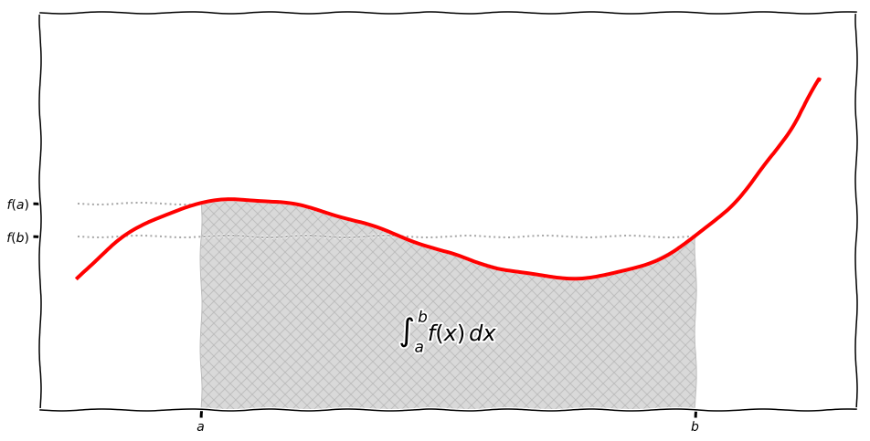
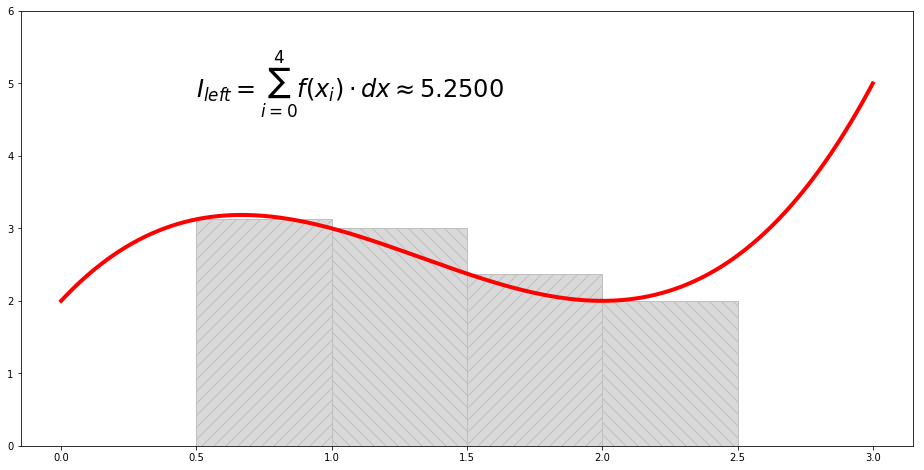
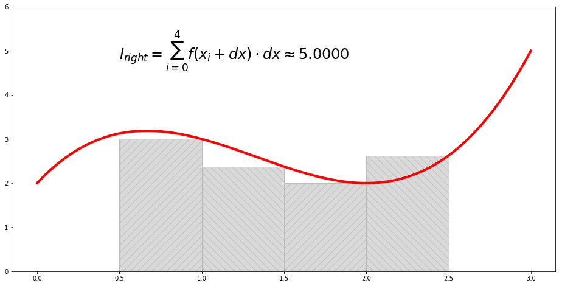
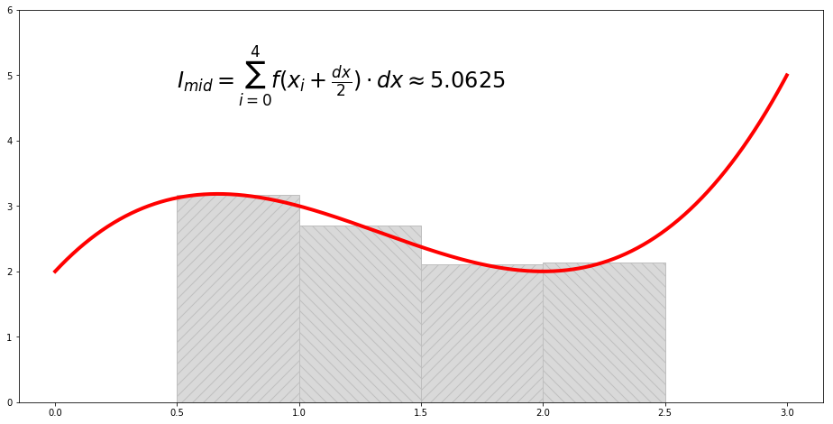
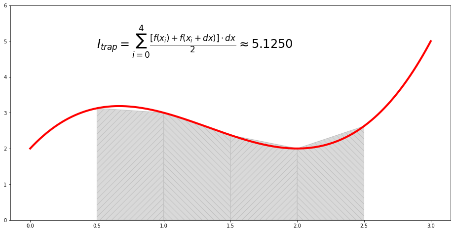
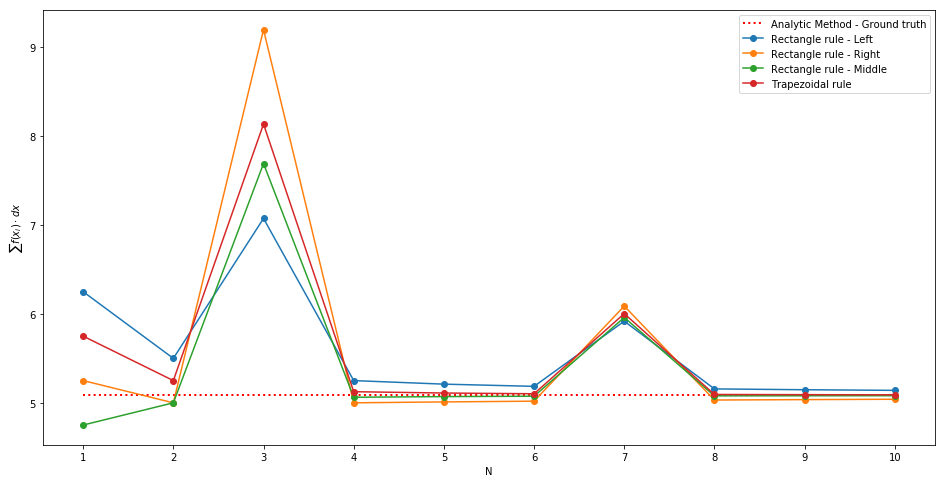

Overview and implementation of some numerical methods for definite integration.
import numpy as np
x = np.linspace(0, 3, 1001)
f = lambda x: x**3 - 4*x**2 + 4*x + 2

Given $\large a=\frac{1}{2}$ and $\large b=\frac{5}{2}$,
$$ \large I=\left.\left(\frac{x^4}{4}-\frac{4x^3}{3}+2x^2+2x\right)\right|_a^b = \frac{61}{12} \approx 5.0833 $$I = 61/12
a = 0.5
b = 2.5
Ax = np.linspace(a, b, 101)
Ay = f(Ax)
%%time
def defInt_left(f, a, b, N):
# left-hand point
result = 0; FX = []; Xn = []
dx = abs(b - a)/N
while a < b:
result += f(a)*dx
FX += [f(a)]
Xn += [a]
a += dx
return result, FX, Xn, dx
N = 4
I_left, FX, Xn, dx = defInt_left(f, a, b, N)
Wall time: 0 ns

%%time
def defInt_right(f, a, b, N):
# right-hand point
result = 0; FX = []; Xn = []
dx = abs(b - a)/N
while a < b:
result += f(a + dx)*dx
FX += [f(a + dx)]
Xn += [a]
a += dx
return result, FX, Xn, dx
N = 4
I_right, FX, Xn, dx = defInt_right(f, a, b, N)
Wall time: 0 ns

%%time
def defInt_middle(f, a, b, N):
# middle point
result = 0; FX = []; Xn = []
dx = abs(b - a)/N
while a < b:
result += f(a + dx/2)*dx
FX += [f(a + dx/2)]
Xn += [a]
a += dx
return result, FX, Xn, dx
N = 4
I_mid, FX, Xn, dx = defInt_middle(f, a, b, N)
Wall time: 0 ns

%%time
def defInt_trapezoid(f, a, b, N):
# trapezoidal rule
result = 0; FXa, FXb = [], []; Xn = []
dx = abs(b - a)/N
while a < b:
result += (f(a) + f(a + dx))*dx/2
FXa += [f(a)]; FXb += [f(a + dx)]
Xn += [a]
a += dx
return result, FXa, FXb, Xn, dx
N = 4
I_trap, FXa, FXb, Xn, dx = defInt_trapezoid(f, a, b, N)
Wall time: 0 ns

%%time
Nx = range(1, 11)
I1, I2, I3, I4 = [], [], [], []
for Ni in Nx:
i1, *_ = defInt_left(f, a, b, Ni); I1 += [i1];
i2, *_ = defInt_right(f, a, b, Ni); I2 += [i2];
i3, *_ = defInt_middle(f, a, b, Ni); I3 += [i3];
i4, *_ = defInt_trapezoid(f, a, b, Ni); I4 += [i4];
Wall time: 1.5 ms
